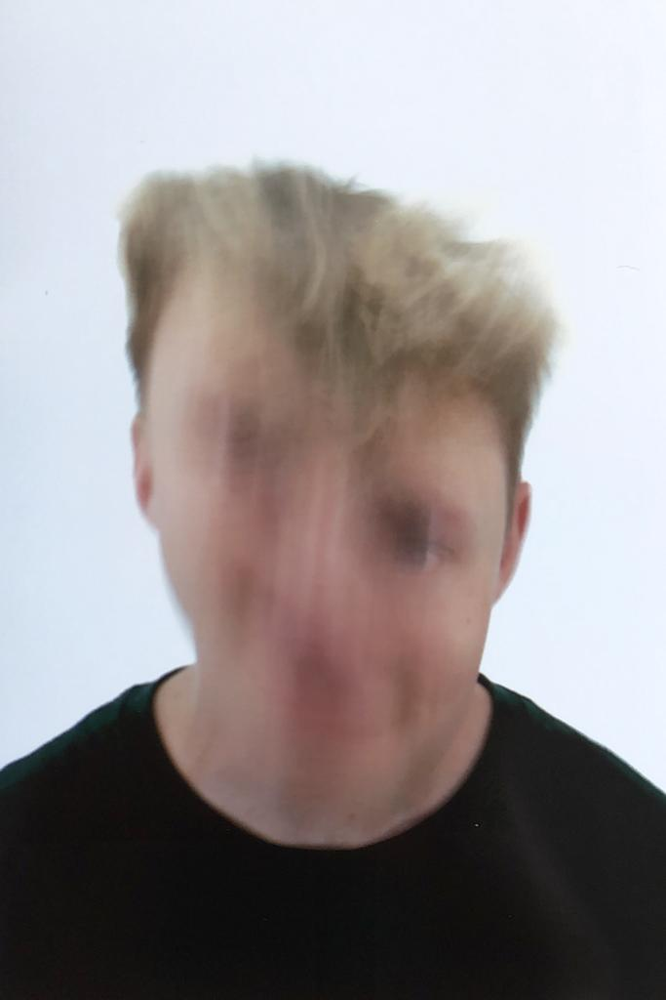
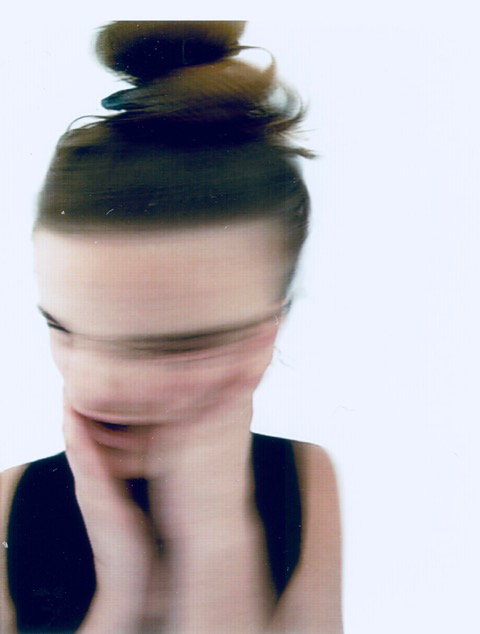

Nous sommes Besili Trafic. Nous avons grandi à la campagne et étudié nos arts dans les villes. Nous sommes belgo-suisses aux racines multiples. Nous sommes comédien·ne·s, musicien·ne·s, danseur·euse·s, scénographes, plasti-cien ·ne·s et performeur·euse·s.
Nous sommes une masse mouvante à 8 têtes et 16 pieds. Nous sommes un collectif pluridisciplinaire qui s'ancre dans une démarche de transmission de savoir au sein du groupe afin de développer son propre langage.
Nous voulons le valoriser en créant des espaces de recherche qui lui sont consacrés. Nous ne cherchons pas à fonctionner sur mandat mais sur une construction collective nécessitant l’implication de tou·te·s à chaque étape du processus.
Nous croyons en l'oeuvre artistique collective car elle s’oppose à un système que nous jugeons trop individualiste.

GASPAR NARBY 1996
est un musicien canado-suisse. Il obtient en 2018 un bachelor en Musique Populaire à l’université de Goldsmiths à Londres, avec la mention très bien («first honours»). Son projet solo, riche de trois EPs et d’une dizaine de singles déjà, cumule plusieurs millions de streams. Il l’a emmené sur des scènes britanniques et suisses (à Corsica Studios, à SET Dalston, ou au Notting Hill Arts Club à Londres, mais aussi au Studio 15 à Lausanne et à La Fête Des Vignerons à Vevey notamment) et lui a offert le titre de «artist to watch» par MixMag et SRF.
Le clip pour son morceau Elderflower (dir. Yolane Rais) est sélec- tionné aux Journées de Soleure 2020. Il a également mené la création sonore pour des performances du chorégraphe suisse Tommy Cattin (Nomad, 2020), de l’artiste visuel suisse Damien Comment (Lever Le Voile, 2017) de la performance artist britannique Amy Steel (Unmoored, 2017), ainsi qu’enregistré des field recordings additionnels pour le film de danse 3D du chorégraphe suisse Gilles Jobin (WOMB, 2016), lauréat du Dance Film Festival de San Francisco.
Il a également créé le sound design et la musique du court-métrage Hold Your Breath (2018) du réalisa- teur américain Théo Le Sourd, qui a été vu près de 3mio de fois sur YouTube uniquement. En 2021 également, il co-fonde le collectif BESILI TRAFIC dont le premier spectacle La maison d’en haut voit le jour en mars 2023.
X

GILLES ESCOYEZ 1997
est comédien et metteur en scène. Il s’initie au théâtre dès son plus jeune âge et intègre à 13 ans l’Académie où il suit ses premiers cours. En 2013, il atteint avec deux amis la finale du concours Scènes à 2.3, supervisé cette année-là par Geneviève Damas. Après avoir suivi l’option théâtre du Lycée Martin V de Louvain-la-Neuve en humanités artistiques, il est diplômé en 2021 à l’IAD en interprétation dramatique.
Il assiste le metteur en scène Vladimir Steyaert en 2019 sur sa pièce Codebreakers, montée et produite au Théâtre National. En 2020, il remporte aux côtés de Laurie Perissutti le Prix Jeunesse du canton du Jura (Suisse) pour la création de la pièce On se réincarnera pas en papillons. Il co-réalise en 2021 le film Maintenant qu’on est là, inspiré de l’expérience théâtrale. En 2021, il co-fonde le collectif BESILI TRAFIC dont le premier spectacle La maison d’en haut voit le jour en mars 2023.
X
JEROME CASTIN 1995
est musicien. Il étudie à LUCA School of Arts à Leuven où il entame un cursus de 5 ans en guitare jazz, et finit en 2020 son master en arrangement et composition. En 2021 il enregistre le premier album de son groupe BBUNG, dont il est leader, compositeur et arrangeur au Jet Studio à Bruxelles, chez le label Tiny House Records.
Toujours en 2021, il s’attèle à la création musicale de la pièce On se réincarnera pas en papillon, (projet lauréat du Prix Jeunesse Jura 2019) mis en scène par Laurie Perissutti et Gilles Escoyez. En 2021 également, il co-fonde le collectif BESILI TRAFIC dont le premier spectacle La maison d’en haut voit le jour en mars 2023.
X

LUNA SCHMID 1995
est comédienne. Après une maturité théâtre au lycée cantonal de Porrentruy, elle entame des études de théâtre à Bruxelles à l’école internationale LASSAAD puis retourne en Suisse et débute un Bachelor Schauspiel à la ZHdK dont elle sort diplômée en 2021. En 2019 elle reçoit le Prix d’étude du Concours d’art dramatique du Pour-cent culturel Migros. Elle joue dans Rausch – ein Sommernachtstraum (Theater Uri) mis en scène par Livio Beyeler ainsi que dans l’installation interactive Multiversum Birsfelden (Roxy Birsfelden) mis en scène par Katharina Germo.
De 2020 à 2022 elle est engagée en tant que comédienne par le Theater Oberhausen en Allemagne où elle travaille notamment avec Hakan Savas Mican, Bert Zander, Jeremy Nedd, Elsa-Sophie Jach, Reut Shemesh et Florian Fiedler. En 2021 elle reçoit le prix d’encouragement BA Théâtre de la ZHdK pour son travail Wo der Regen hinfällt. En 2021 également, elle cofonde le collectif BESILI TRAFIC dont le premier spectacle La maison d’en haut voit le jour en mars 2023.
X
MERLIN DELENS 1997
est comédien. Après des études secondaires en option théâtre auLycée Martin V, il entame des études d’interprétation dramatiques à l’Institut des Arts de Diffusion en Belgique. Il obtient son diplôme de Master en 2021. En 2020, aux côtés de cinq autres artistes bruxellois, il fonde l’asbl GRIFFES. La même année, il joue dans le long métrage Zéria réalisé par Harry Cleven (primé au Reykjavik independent film festival, hollywood international golden age, New york independent cinema awards, Europe film festival U.K, Prague, Athens, London, Berlin and Tokyo international monthly art film festival), ainsi que dans le projet théâtral l’Abattoir de la compagnie KRAFT au coq’Arts festival à Bruxelles.
En 2021, il joue dans le projet Désir, Terre et Sang de l’Infini Théâtre et des Baladins du Miroir ainsi que dans le court-métrage Lupus réalisé par Zoé Brichau et sélectionné au film festival de Gent. En 2021 également, il co-fonde le collectif BESILI TRAFIC dont le premier spectacle La maison d’en haut voit le jour en mars 2023.
X

SOPHIE SCHMID 1997
est scénographe et costumière. Après une formation à l’école d’arts appliqués de la Chaux-de-Fonds en section mode, elle réalise un stage de 6 mois dans les ateliers de couture du Anhaltisches Theater Dessau. Elle fait partie de la Compagnie Balor en tant que costumière, scénographe et performeuse, et participe à différentes pièces, telles que Le bal des mollets saillants et Le Roi s’arpente la plage des 6 pompes. En 2019, elle intègre le collectif Blue vulvettes, avec lequel elle réalise le courtmétrage Le sexe féminin existe, sélectionné par la suite aux Journées de Soleure 2020. En 2019 également, elle débute un Bachelor en scénographie à la ZHdK.
En 2020, elle crée les costumes pour Holytrash&the supertroupers, mis en scène par Johannes Schmidt, pièce sélectionnée au festival Körber Studio Junge Regie. En 2021, elle réalise la scénographie et les costumes de Care in progress, un projet soutenu par la plateforme pour jeunes talents Tankstelle Luzern. En 2021 également, elle co-fonde le collectif BESILI TRAFIC dont le premier spectacle La maison d’en haut voit le jour en mars 2023.
X

LAURIE PERISSUTTI 1996
comédienne et metteuse en scène. Après une année de formation théâtrale à Valence (ES ), elle débute ses études en interprétation dramatique à l’Institut des Arts de Diffusion (BE ) dont elle obtient son master en 2021. Cette même année, elle met en scène le projet belgo-suisse On se réincarnera pas en papillons aux côtés de Gilles Escoyez (projet lauréat du Prix Jeunesse Jura 2019). Parallèlement à la pièce, iels réalisent leur premier film documentaire diffusé au Palais des Beaux-Arts de Bruxelles en novembre 2021. En 2021 également, elle co-fonde le collectif BESILI TRAFIC dont le premier spectacle La maison d’en haut voit le jour en mars 2023.
X